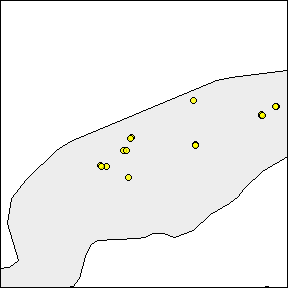
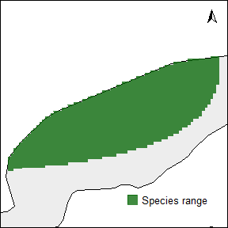
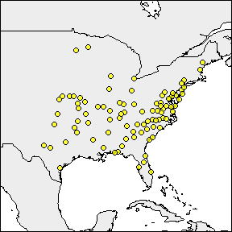
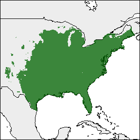
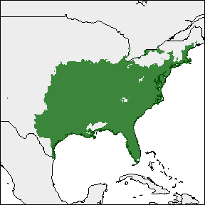
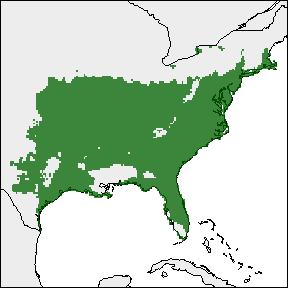

rangemap short tutorial III
Marlon E. Cobos, Vijay Barve, Narayani Barve, Alberto Jiménez-Valverde, and Claudia Nuñez-Penichet
2021-09-13
Source:vignettes/rangemap_short_tutorial_III.Rmd
rangemap_short_tutorial_III.Rmd
Species distribution ranges based on statistical models
If you haven’t seen the rangemap short tutorial I and short tutorial II, take a look at them for more background on the rangemap R package.
In this example we will explore two functions of this package that allow the users to crate species ranges based on trend surface analyses and ecological niche models.
Species distribution range using a trend surface analysis
With the rangemap_tsa generates a distributional range for a given species using a trend surface analysis. See the function’s help for more details.
# Data
data("occ_f", package = "rangemap")
# Defining parameters
CU <- simple_wmap("simple", regions = "Cuba")
# Now we can create the species range based a tsa
# Remember, this is a statistical approach, it may take some time depending on the area
tsa_range <- rangemap_tsa(occurrences = occ_f, region_of_interest = CU,
cell_size = 2)Now the figure of our results
The other one with the potential extent of occurrence, the species occurrences and other map details. But let’s first define the characteristics we want in the figure.
par(mar = rep(0, 4)) # optional, reduces the margins of the figure
rangemap_plot(tsa_range, add_occurrences = TRUE, polygons = CU,
range_color = NA)
rangemap_plot(tsa_range, northarrow = TRUE, polygons = CU,
legend = TRUE, legend_position = "bottomright")
Species distribution range from an ecological niche model
The function rangemap_enm generates a distributional range for a given species using a continuous raster layer produced with an ecological niche modeling algorithm. See the function’s help for more details.
# parameters
sp_mod <- raster::raster(list.files(system.file("extdata", package = "rangemap"),
pattern = "sp_model", full.names = TRUE))
data("occ_train", package = "rangemap")
thresh <- 1 # threshold 1 to be used
thresh1 <- 5 # threshold 2 to be used
thresh2 <- 10 # threshold 3 to be used
save <- TRUE
name <- "test"
# Now we can create the species range from the models
enm_range <- rangemap_enm(occurrences = occ_train, model_output = sp_mod,
threshold_omission = thresh)
enm_range1 <- rangemap_enm(occurrences = occ_train, model_output = sp_mod,
threshold_omission = thresh1)
enm_range2 <- rangemap_enm(occurrences = occ_train, model_output = sp_mod,
threshold_omission = thresh2)Seeing all species ranges based on enms
Using the rangemap_plot function we can produce a nice figure for each of the species ranges. Lets put all the figures together and compare them.
par(mar = rep(0, 4))
rangemap_plot(enm_range, add_occurrences = TRUE, range_color = NA)
rangemap_plot(enm_range)
rangemap_plot(enm_range1)
rangemap_plot(enm_range2)